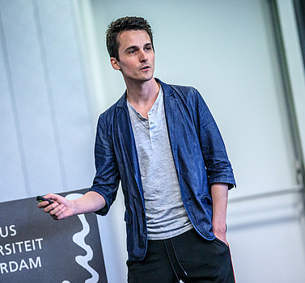

Pierre Alquier
RIKEN AIP - Approximate Bayesian Inference Team - Research scientist.
 
Pierre ALQUIER -- Research scientist
アルキエ ピエール -- 研究員
x
Nihonbashi 1-chome Mitsui Building, 15th floor,
日本橋一丁目三井ビルディング 15階
x
1-4-1 Nihonbashi, Chuo-ku, Tokyo
東京都中央区日本橋1-4-1
x
103-0027, JAPAN
〒103-0027
x
pierre "dot" alquier "dot" stat "at" gmail.com
pierrealain "dot" alquier "at" riken.jp
x